Projects
Github (personal)
Github (Georgia Tech - GTID access required)
HackerRank
HackerEarth
Pattern Recognition Task
I programmed an emotionally engaging graphical pattern detection task for our research study on individual variability in pattern recognition under ambiguous feedback. This study was conducted under the Laboratory for Computational Neurodiagnostics at Stony Brook University.
A description of the study, including more details related to the cyber security task, can be downloaded here.
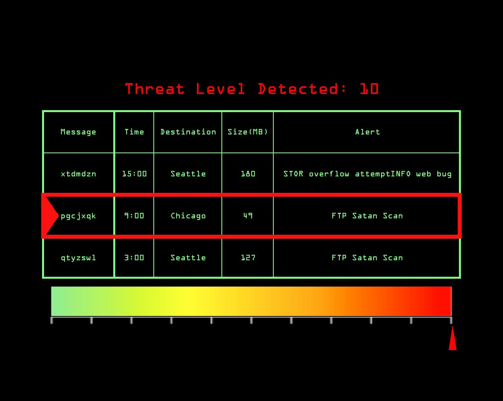 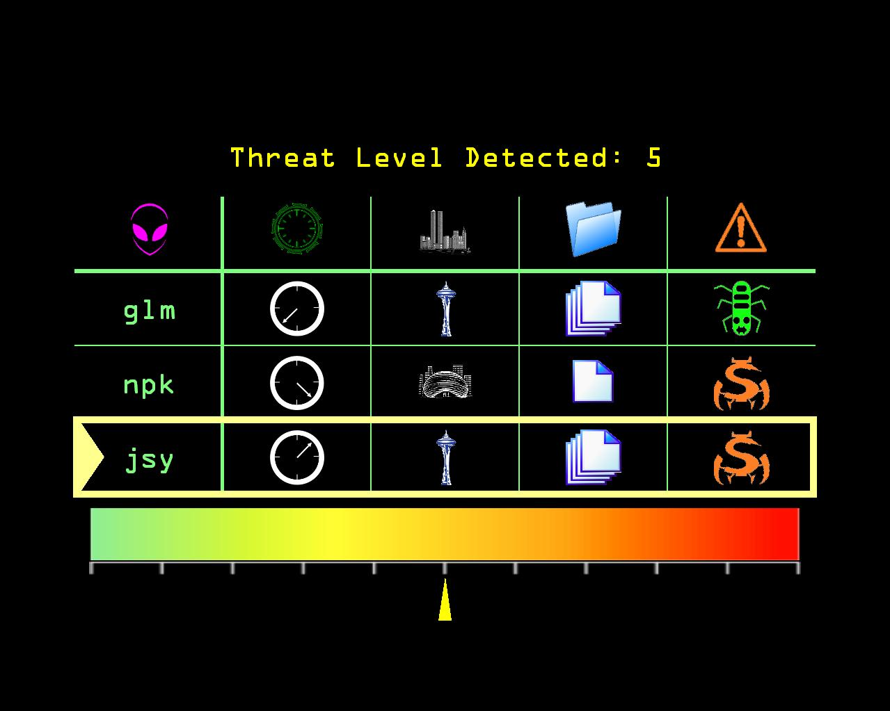 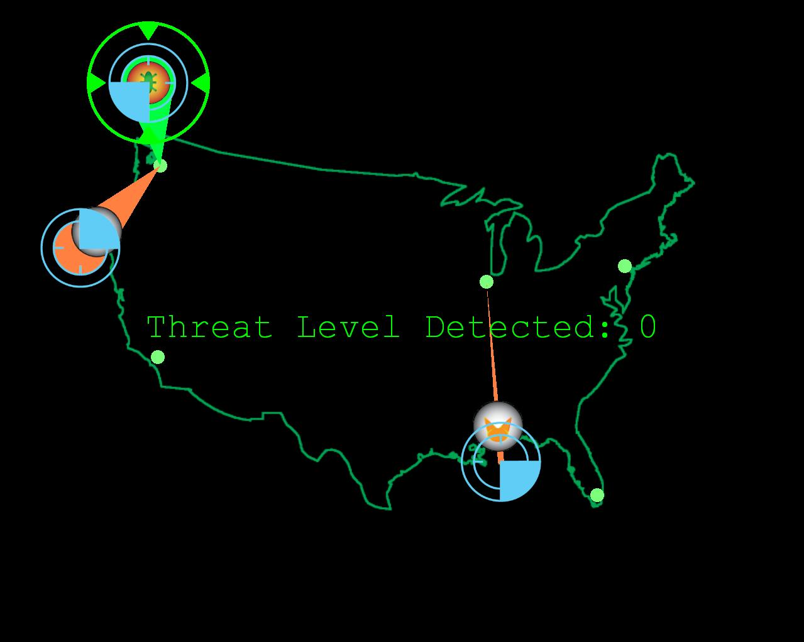Connect Four
My AP Computer Science final project. Demonstrates the use of Java's Swing and AWT for a simple graphical two-player game.
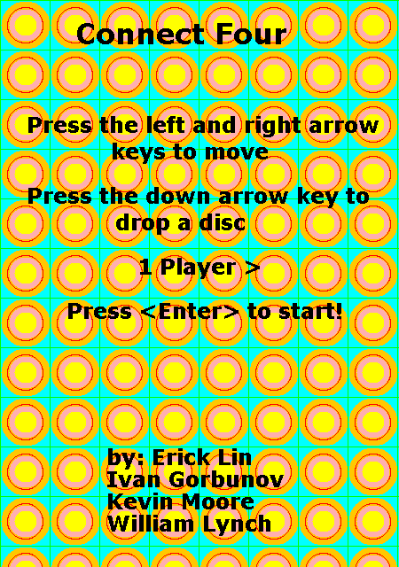 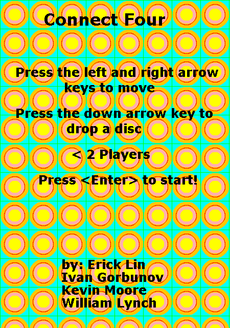 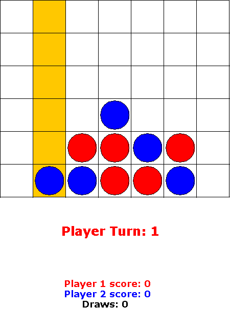 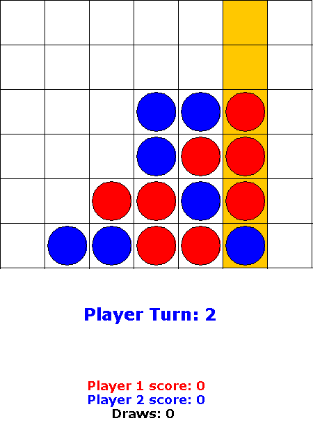 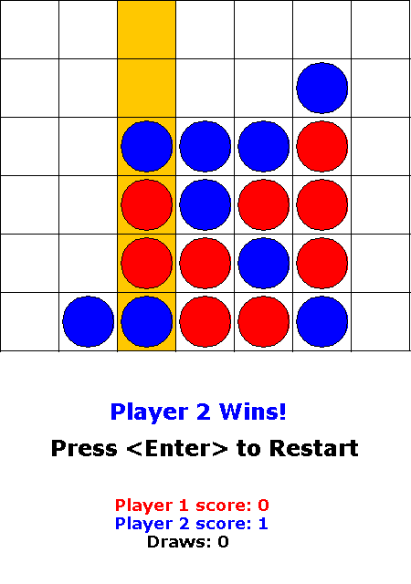 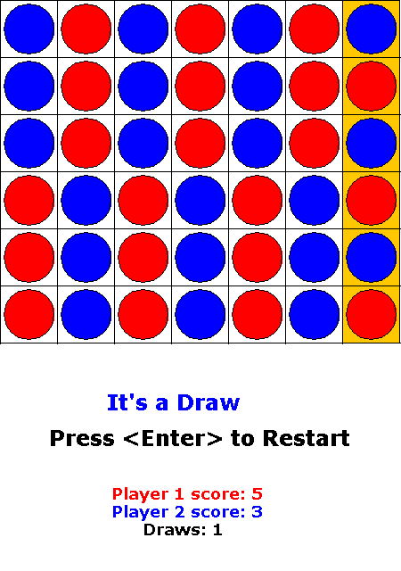Interactive Meiosis Animation
Educational demonstration created for my 9th grade biology final project. Programmed in the Game Maker Language and IDE. Resources were drawn using computer tools.
Click here to download.

 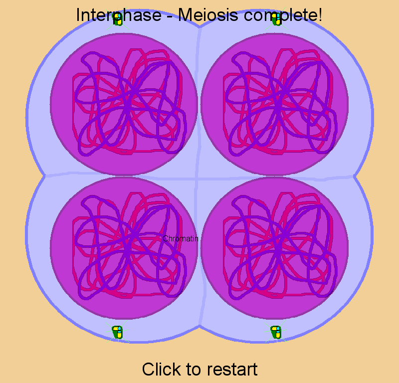
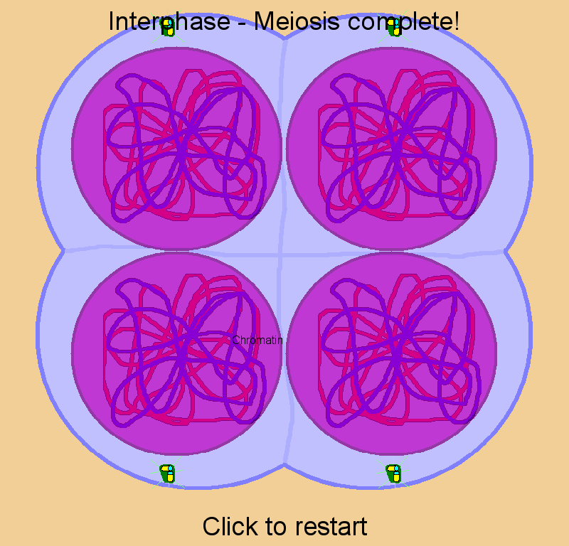